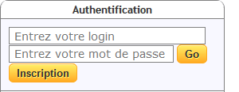

Que dois-je faire pour accéder au réseau NEMO ?
Pour accéder aux groupes de discussion disponibles sur ce serveur Nemo, vous devez vous identifier.
- Si vous ne disposez pas encore de vos identifiants (login et mot de passe), cliquez sur le bouton "Inscription" et suivez la procédure.
- Sinon, complétez les champs "Entrez votre login" et "Entrez votre mot de passe", puis cliquez sur le bouton "Go".
Quand je veux écrire un article, mon nom et mon adresse email ne sont pas enregistrés dans l'en-tête.
Avant de publier un "Nouveau sujet" ou de "Répondre" à un article, vous devez cliquer sur le bouton "Préférences" et paramétrer votre "Configuration de Nemo".
Voir le chapitre "C - PRÉFÉRENCES ET CONFIGURATION DE NEMO"
Mon pseudo et mon email sont déjà enregistrés. Quelle est l'utilité des champs "Expéditeur", "Email visible" et "Email de réponse" ?
Ces informations sont indépendantes du nom d'utilisateur (login) que vous avez choisi pour votre inscription et de l'adresse email à laquelle votre mot de passe vous a été envoyé.
- Champ "Expéditeur :" Entrez votre nom ou pseudo qui apparaîtra dans la colonne Expéditeur de la liste des articles et dans le champ De au-dessus du corps de l'article.
- Champ "Email visible :" Entrez votre adresse email valide ou une adresse fictive qui sera affichée entre crochets <...> après votre nom/pseudo, dans le champ De au-dessus du corps de l'article. Si vous inscrivez une adresse fictive, n'oubliez pas d'ajouter .invalid à la fin.
- Champ "Email de réponse :" Entrez votre adresse email valide qui sera affichée dans le champ Réponse à au-dessus du corps de l'article. Un clic sur cette adresse email ouvrira le logiciel de messagerie par défaut de l'utilisateur et lui permettra de vous envoyer un message personnel.
Le champ "Signature" me permet-il d'enregistrer ma propre signature ? Avec quelles limites en nombre de caractères ou de lignes ?
Vous pouvez enregistrer une signature personnalisée. Afin de respecter les usages, limitez cette signature à 4 lignes de moins de 80 charactères.
Pourquoi "Générer une
nouvelle clé" dans les préférences ?
Que signifie "Confirmer l'envoi d'un message" ?
Cette option de confirmation peut vous sauver la mise, en cas de clic accidentel sur le bouton "Envoyer", alors que la rédaction de votre article n'est pas encore terminée.
Le "Nombre d'articles maximum à charger" s'applique-t-il à tout le serveur ou à chaque groupe de discussion ?
Combien d'articles puis-je charger au maximum ?
Comment utiliser le champ "Rechercher des groupes" ?
Ce champ permet de rechercher des groupes de discussion par mot-clé.
Par exemple, si vous entrez le mot-clé histoire, les groupes suivants seront affichés dans la partie inférieure du cadre :
fr.soc.histoire
fr.soc.histoire.antique
fr.soc.histoire.medievale
fr.soc.histoire.moderne-1453-1789
Comment sélectionner les groupes de discussion que je veux consulter ?
Commencez par sélectionner avec le pointeur de la souris, une hiérarchie (ex : fr.*) ou une sous-hiérarchie (ex : fr.comp.*) dans la partie supérieure du cadre "Favoris".
La liste des groupes de discussion disponibles dans la hiérarchie ou dans la sous-hiérarchie est affichée dans la partie inférieure du cadre.
Le survol d'un nom de groupe avec le pointeur de la souris, affiche la description du groupe dans une bulle. Sélectionnez un groupe de discussion, pour afficher la liste des derniers articles qui y ont été publiés.
Que signifient les couleurs dans les noms des groupes de discussion ?
Vert : Le groupe est
accessible en lecture et écriture.
Orange : Comme ci-dessus, mais votre article ne sera publié qu'après approbation par un modérateur.
Rouge : Le groupe est en lecture seule. Vous ne pouvez pas y publier d'article.
Comment ajouter et retirer des groupes dans mes Favoris ?
Ajouter : Dans la partie inférieure du cadre "Favoris", le clic-droit sur un nom de groupe ouvre un menu contextuel dans lequel il faut cliquer sur "Ajouter aux favoris".
Retirer : Dans la partie supérieure du cadre "Favoris", le clic-droit sur un nom de hiérarchie, de sous-hiérarchie ou de groupe, ouvre un menu contextuel dans lequel il faut cliquer sur "Retirer des favoris".
J'ai modifié l'ordre de mes favoris. Comment rétablir le tri alphabétique par nom ?
Dans la liste de vos favoris, le clic-droit sur un nom de hiérarchie, de sous-hiérarchie ou de groupe, ouvre un menu contextuel dans lequel il faut cliquer sur "Trier les favoris par ordre alphabétique".
J'ai retiré une hiérarchie (ou une sous-hiérarchie) de mes favoris. Comment la récupérer ?
Exemple : Si vous avez retiré la sous-hiérarchie fr.sci.* de vos favoris, il faut entrer fr.sci.(ne pas oublier le point après sci) dans le champ "Rechercher des groupes". Le cadre inférieur affichera le nom de la sous-hiérarchie fr.sci.*, ainsi que la liste des groupes de discussions qui en font partie. Le clic-droit sur fr.sci.* ouvrira un menu contextuel dans lequel il faut cliquer sur "Ajouter aux favoris".
Quels sont les différentes options d'affichage des articles et leurs particularités?
Après sélection d'une hiérarchie, d'une sous-hiérarchie ou d'un groupe de discussion dans le cadre de gauche, les articles sont affichés par défaut dans l'ordre chronologique inverse, le plus récent en haut. Cet ordre chronologique peut être inversé par clic-gauche sur le titre de la colonne "Date". Les autres options de tri des articles sont :
- Tri alphabétique direct ou inverse par clic-gauche sur le titre de la colonne "Expéditeur".
- Tri alphabétique direct ou inverse par clic-gauche sur le titre de la colonne "Sujet".
- Tri des articles lus / non lus par clic-gauche sur l'icône

Les options d'affichage en arborescence sont obtenues par clic-gauche sur l'icône  située sur la gauche de la barre des titres :
située sur la gauche de la barre des titres :
- Premier clic : affichage des articles par Sujet, dans l'ordre chronologique direct et en arborescences déployées.
- Deuxième clic : affichage des articles par Sujet, dans l'ordre chronologique direct et en arborescences fermées.
- Troisième clic : rétablissement de l'affichage par défaut.
Dans les deux premiers modes d'affichage en arborescence, vous pouvez cliquer sur [] pour fermer une arborescence et sur [] pour la déployer.
Est-il possible de répondre à un article dans toutes les options d'affichage ?
Je me suis authentifié et pourtant les champs "Expéditeur" et "Email" de la fenêtre "Rédaction" sont vides.
Voir le point B - 2. de la FAQ.
J'ai lu un article et il est passé en maigre. Comment le remettre en gras pour y répondre plus tard ?
Clic-droit sur l'article et sélectionner "Marquer le message comme non lu" dans le menu contextuel.
Quel est l'usage de l'icône "Afficher la console" ?
Quel est l'usage du bouton "Voir source" ?
Il permet d'accéder aux en-têtes de l'article, notamment à certains paramètres techniques.
Comment faut-il remplir les champs disponibles dans la fenêtre "Recherche d'articles" ?
Est-il possible de faire une recherche sur plusieurs critères ?
Pourquoi la recherche n'accepte-t-elle pas un mot entre guillemets dans le "Body" ?
Pourquoi les barres des citations sont-elles transformées en chevrons ?
Ai-je le droit de modifier le Sujet ?
Ce n'est pas une question de droit, mais d'usages et de bonne information de vos lecteurs. Si vous estimez qu'un nouveau Sujet est plus approprié à votre réponse, il est d'usage de rappeler l'ancien sujet comme ceci : Mon nouveau sujet ... (Etait : Re: Ancien sujet de la discussion ...)
Puis-je ajouter un ou plusieurs groupes de destination ?
Vous pouvez inscrire jusqu'à trois
groupes de destination. Cependant, au-delà de deux groupes, vous devez obligatoirement inscrire un groupe de redirection dans le champ "Faire suivre :". Pour plus d'informations sur les publications croisées, voir : http://www.usenet-fr.net/fur/minis-faqs/crosspost.html.
Qu'est-ce qu'un newsgroup de redirection ?
Si un article est publié sur plus d'un groupe de discussion, il est recommandé d'inscrire dans le champ "Faire suivre :", le groupe sur lequel les réponses à votre article seront dirigées et sur lequel se poursuivra la discussion. Pour plus d'informations sur les redirections, voir : http://www.usenet-fr.net/fur/minis-faqs/crosspost.html.
Quel est l'usage des boutons "img" et suivants ?
"C'est comme le Port-Salut, c'est écrit dessus." 
Seule la bulle sur le bouton spoil mérite
une précision : le texte sélectionné est non seulement caché, mais aussi codé en ROT 13. Pour une explication du codage ROT 13 voir : http://fr.wikipedia.org/wiki/ROT13.
 /
/  pour afficher / masquer la réponse
pour afficher / masquer la réponse